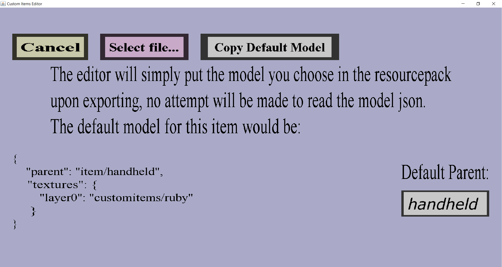

The model edit menu can be used to change the (custom) model file of a custom item.
If you have already selected a texture called "ruby" and you have not selected a custom model yet,
it should look like this:

On the top are the 'Cancel', 'Select file...' and 'Copy default model' button.
Below those buttons is some info about custom models in the resourcepacks.
On the bottom-left is the default model of the custom item.
Note that you need to select a texture before this default model will be correct!
On the bottom-right is a text edit field initially with text 'handheld'.
-
The 'Cancel' button will bring you back to the item edit menu you came from,
without keeping any changes you made in this menu.
-
The 'Select file...' button will bring you to the filechooser menu,
where you will need to select a .json file. That selected file will then be copied into the editor
and become the custom model file of the custom item. It will be copied into the
resourcepack at the right place upon exporting. After selecting a .json file, you will be brought back
to the item edit menu you came from.
-
The 'Copy Default Model' button will copy the default model of the custom item to your clipboard, so that you
can paste it into a .json file (or some other text file). That is very useful if you want to make small
modifications to the item model:
You create a new .json file on your computer, paste the default model content into it, change it, save it and
select via the 'Select file...' button.
The default model of the custom item you're editing is shown on the bottom-left of this menu.
If you don't select a custom model, the default model will be put in the resourcepack.
-
The edit field below 'Default Parent:' can be used to quickly change the parent property of the
item model (by default "parent": "item/handheld"). When you change the text in this edit field, a button
with the text 'Change to default model with given parent' should appear. If you click that button, the
custom model of the custom item will be changed to the default model, but with the parent property
changed to whatever you put in the text field. Also, you will be brought back to the item edit menu you
came from.
If you left this menu with any other button that the 'Cancel' button, the custom item will now have a custom model.
To preview this model (to check if nothing went wrong), you can click on the 'Change...' button on the right of
'Model:' again. Then, you should see the new custom model on the bottom-left instead of the default item model.